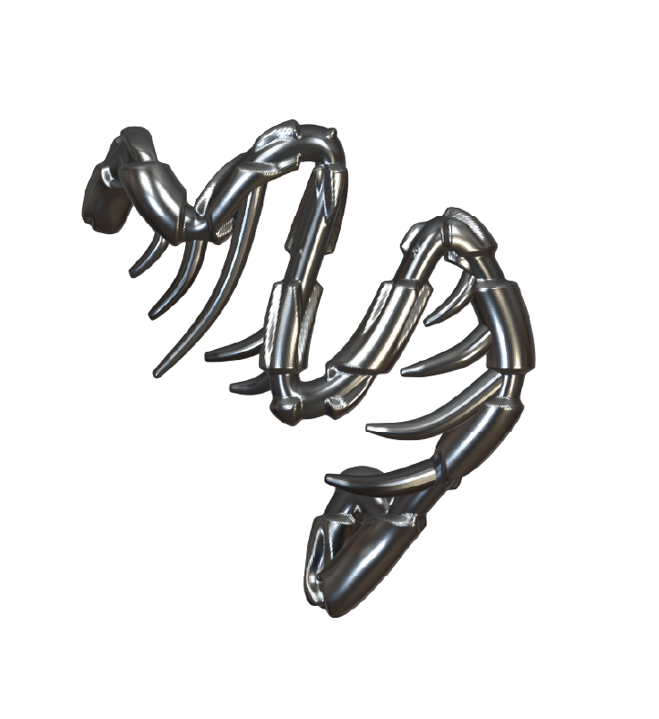
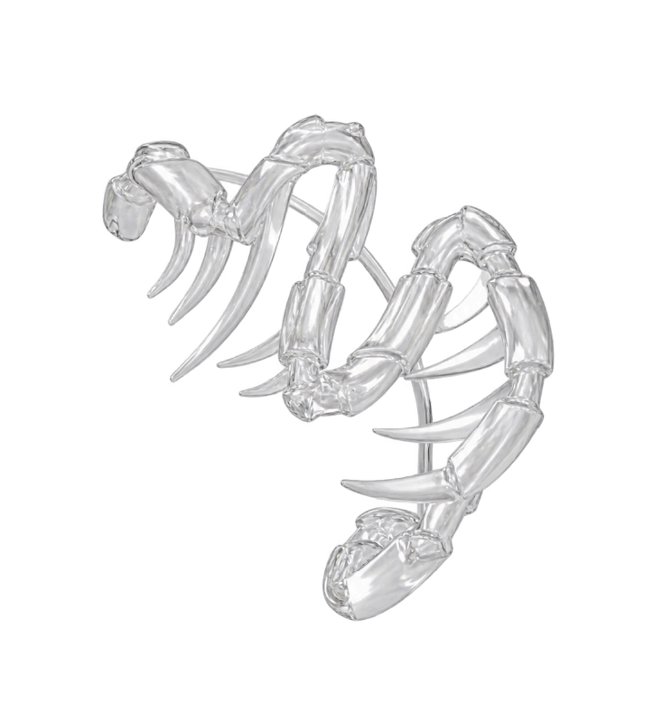
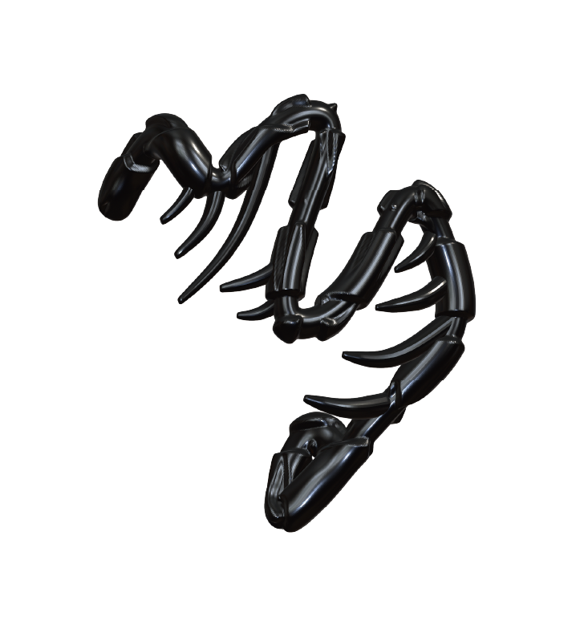
We forge our own steel into armor, relying on ourselves, not rescue.
Like animals with fangs, we have the power to attack and the strength to defend, living as strong and
independent beings.
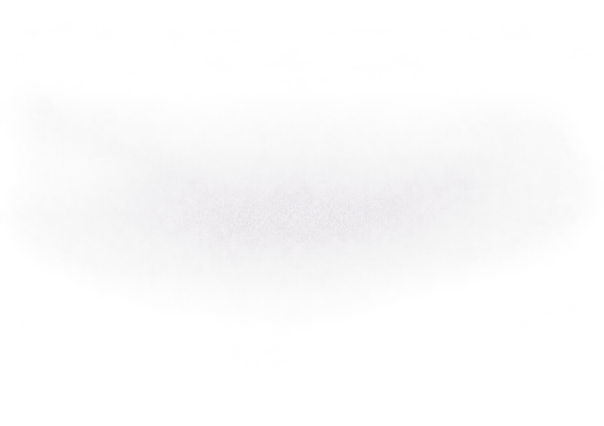
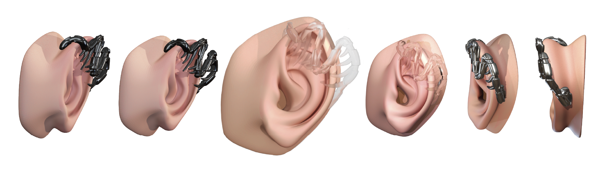
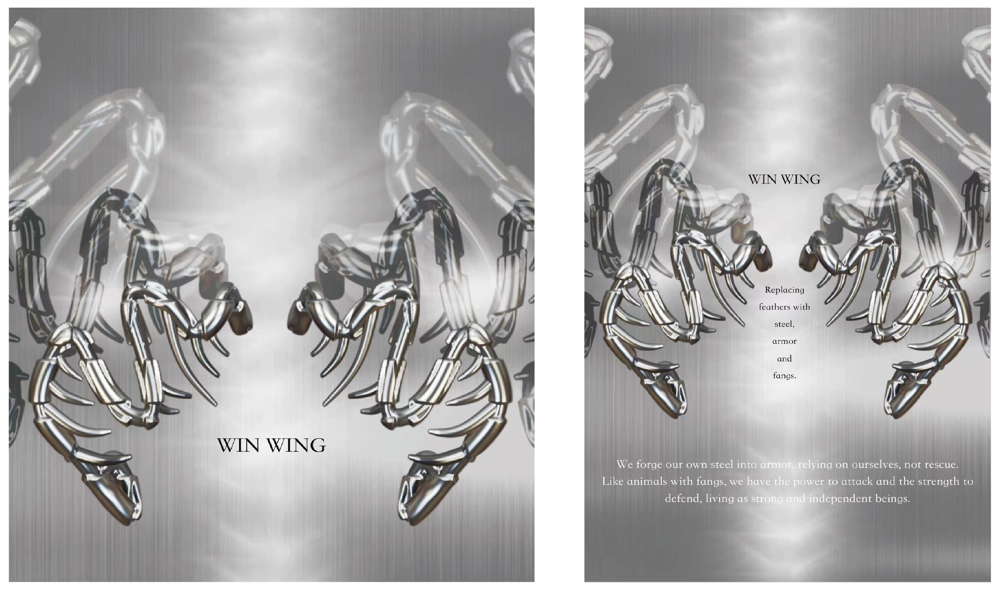
 Winwing photography
Winwing photography
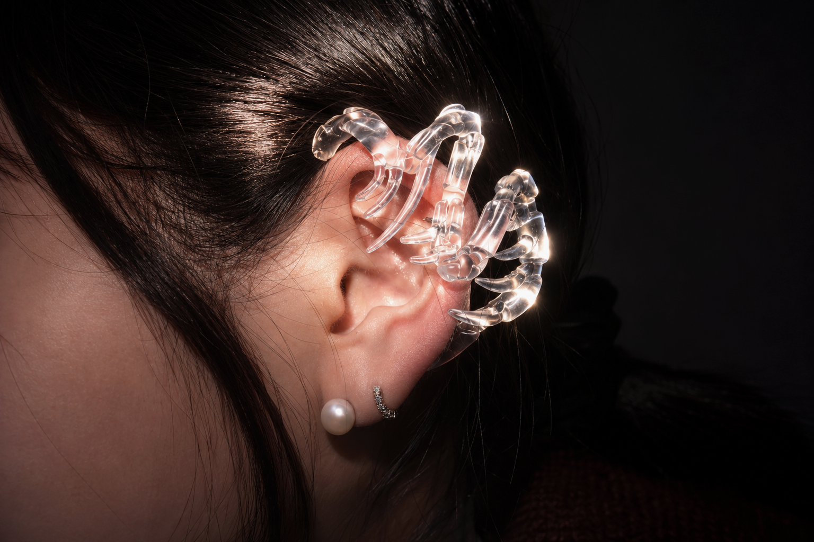
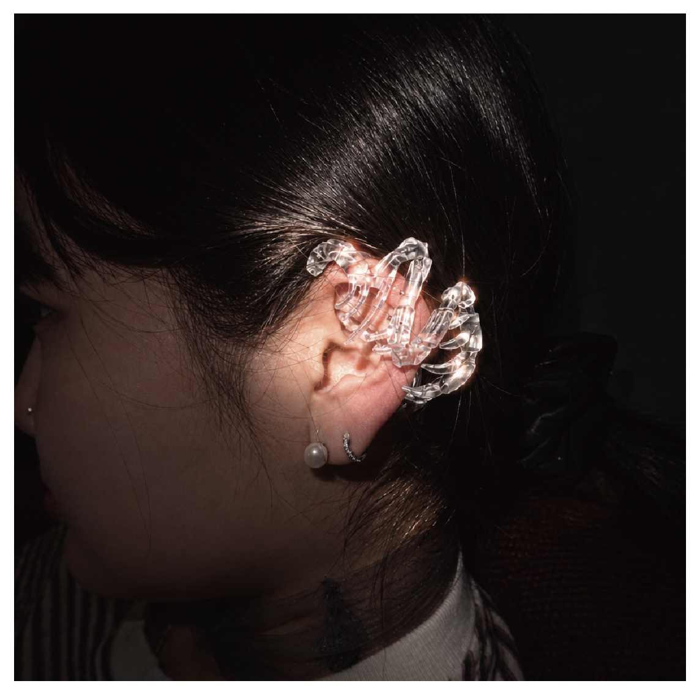
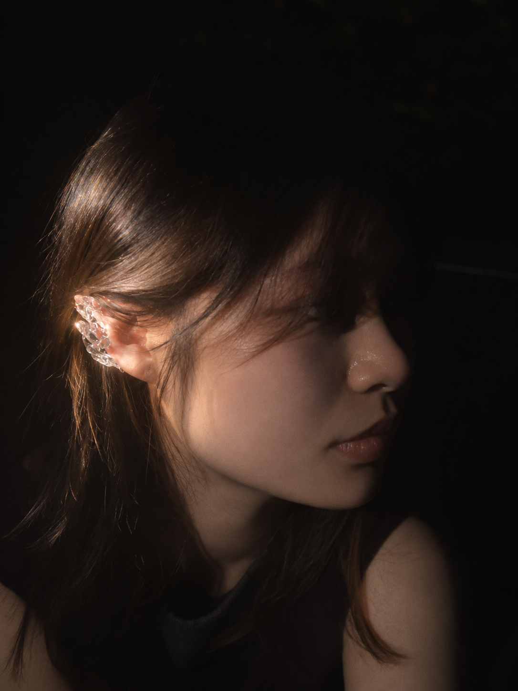
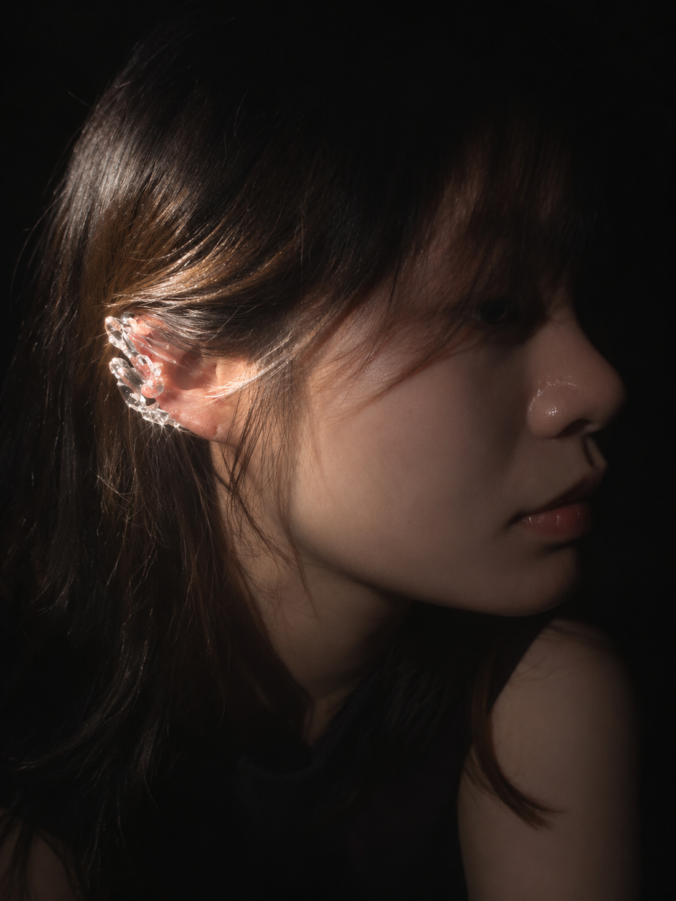
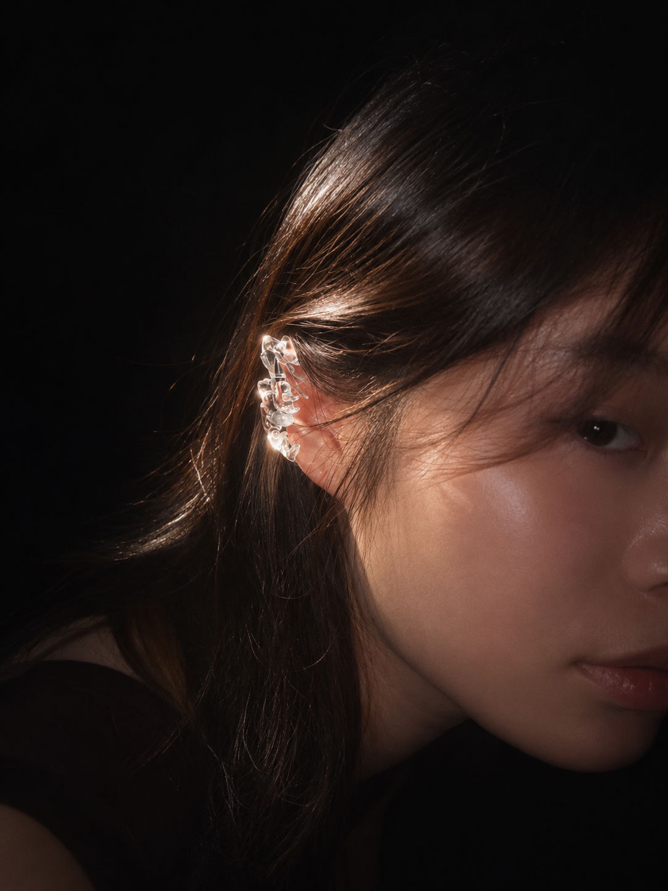